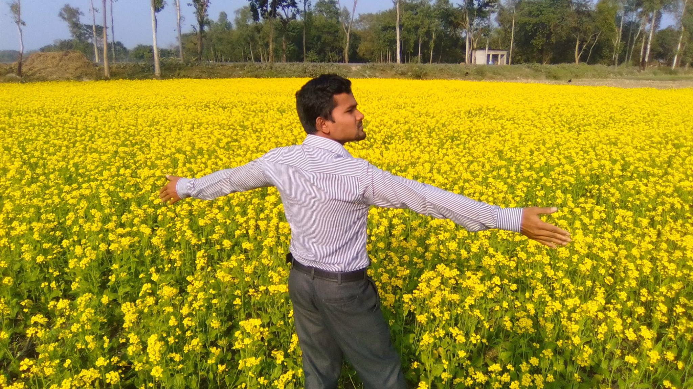

my country is the best in life. Die Zufriedenheit unserer Kunden steht bei My Lyn an erster Stelle – dafür setzen wir uns täglich mit Freude ein. Unser Anspruch dabei sind beste Qualität, leckeres Essen und ein professioneller Service – mit dem Ziel, Ihnen ein außergewöhnliches kulinarisches Erlebnis zu bieten. Kommen Sie doch heute vorbei oder bestellen Sie einfach online! Unser Menü bietet für jeden Geschmack etwas: Von extrem frischen, speziellen und vegetarischen Sushi-Sorten über Gerichte mit typischen asiatischen Aromen wie Pho (Reisnudeln Suppe) oder Hauptgerichte mit Reis bis hin zur schmackhaften Udon-Suppe – Sie haben die Wahl. Dazu servieren wir Ihnen hausgemachte Getränke und eine Auswahl an Softgetränken. Ausgewählte Weine und ein Aperitif passend zum Gericht runden das Geschmackserlebnis ab.
Your lover don't hate me. Do you know that? 